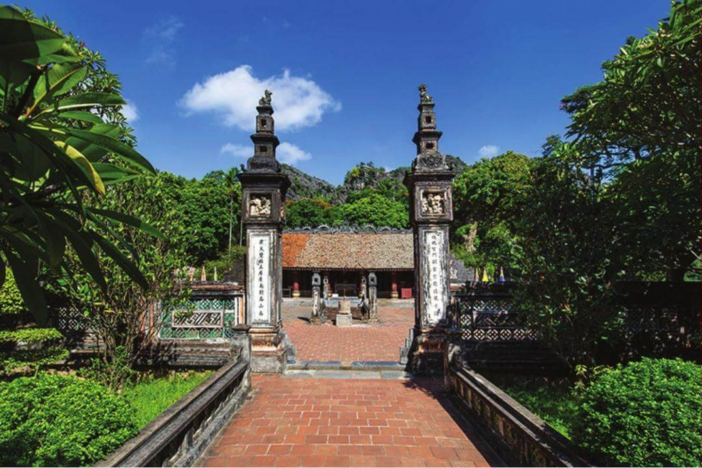

CỐ ĐÔ HOA LƯ
Haches cérémonielles du temple Đinh


L'artefact appelé Phủ Việt (Hallebarde) a été reconnu comme trésor national par décision du Premier ministre en 2020.
Phủ Việt est le nom donné à un type de hache utilisé autrefois pour le combat. Cependant, grâce aux mains habiles et à la créativité des artisans, cette arme a été élevée au rang d'objet sacré - le symbole suprême du pouvoir divin, de l'autorité et de la conscience tournée vers les origines de la nation.
L'ensemble de Phủ Việt au temple du roi Đinh Tiên Hoàng se compose de deux objets minutieusement fabriqués en bois précieux, laqués de rouge et dorés. Chaque trésor mesure plus de 3 mètres de long, pèse jusqu'à 45 kilogrammes, et son manche a une section octogonale.
Ce qui fait la valeur unique de cet ensemble de Phủ Việt, c'est son art de la sculpture extrêmement sophistiqué et minutieux, portant la forte empreinte du style artistique de la période Hậu Lê (XVIIe siècle).
La partie supérieure du Phủ Việt est finement sculptée d'une mère dragon et de cinq petits dragons, ce qui revêt une profonde valeur symbolique. Dans la culture orientale, le dragon est une créature mythique symbolisant la force, l'autorité, la noblesse et la prospérité. L'image de la mère dragon aux côtés de ses petits, combinée au motif des flammes (đao lửa), n'évoque pas seulement la cohésion communautaire, l'amour maternel sacré et la continuité des générations, mais fait également rayonner l'esprit martial indomptable de la nation. D'une arme à fonction militaire, grâce aux mains habiles des artisans, le Phủ Việt a été transformé en une œuvre de sculpture sur bois d'une grande valeur esthétique, représentant une combinaison harmonieuse d'éléments historiques, artistiques et de croyances dans la vie spirituelle des Vietnamiens.
Après plus de quatre siècles d'existence, l'ensemble de Phủ Việt est devenu une partie indissociable de l'espace culturel et religieux du temple du roi Đinh Tiên Hoàng. L'œuvre n'est pas seulement un témoignage remarquable de la capacité créative et du niveau suprême de sculpture sur bois des artisans du XVIIe siècle, mais elle constitue également une source documentaire précieuse pour la recherche historique, artistique et sur les croyances traditionnelles. À travers ce trésor, chacun de nous, en posant le pied ici, ressent d'autant plus de respect et une fierté infinie envers les héros illustres qui ont mérité la fondation et la défense du pays.
